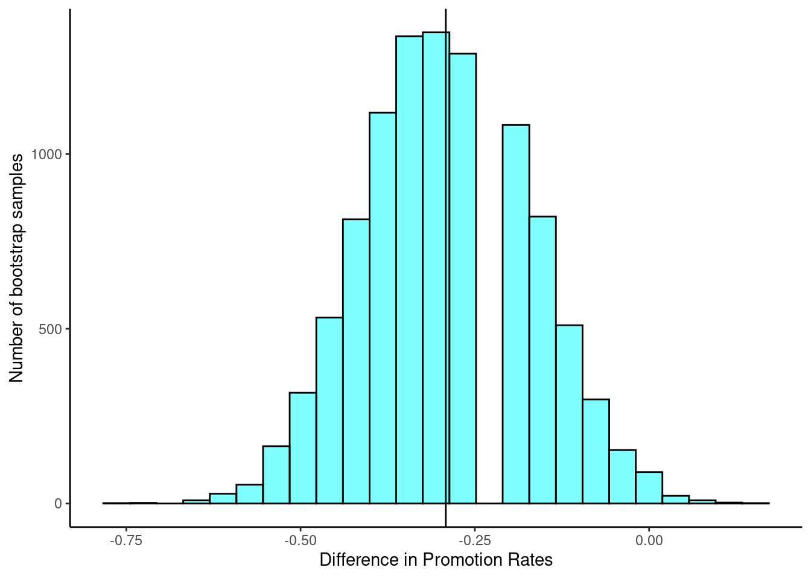

discrim <- read_csv("data/discrimination_study.csv")18 Inferential Thinking Case Study
18.1 Objectives
Using bootstrap methods, obtain and interpret a confidence interval for an unknown parameter, based on a random sample.
Conduct a hypothesis test using a randomization test, to include all 4 steps.
18.2 Introduction
We now have the foundation to move on to statistical modeling, both inferential and prediction. First we will begin with inference, where we use the ideas of estimation and the variance of estimates to make decisions about the population. We will also briefly introduce the ideas of prediction. Then in the final block of material, we will examine some common linear models and use them for both prediction and inference.
18.3 Foundation for inference
Suppose a professor randomly splits the students in class into two groups: students on the left and students on the right. If \(\hat{p}_{_L}\) and \(\hat{p}_{_R}\) represent the proportion of students who own an Apple product (e.g., iPad, iPod, iPhone, AirPods, Apple Watch, etc.) on the left and right, respectively, would you be surprised if \(\hat{p}_{_L}\) did not exactly equal \(\hat{p}_{_R}\)?
While the proportions would probably be close to each other, they are probably not exactly the same. We would probably observe a small difference due to chance.
Exercise:
If we don’t think the side of the room a person sits on in class is related to whether the person owns an Apple product, what assumption are we making about the relationship between these two variables?1
Studying randomness of this form is a key focus of statistical modeling. In this block, we’ll explore this type of randomness in the context of several applications, and we’ll learn new tools and ideas that can be applied to help make decisions from data.
18.4 Case study: gender discrimination
We consider a study investigating gender discrimination in the 1970s, which is set in the context of personnel decisions within a bank.2 The research question we hope to answer is, “Are females discriminated against in promotion decisions made by male managers?”
18.4.1 Variability within data
The participants in this study were 48 male bank supervisors attending a management institute at the University of North Carolina in 1972. They were asked to assume the role of the personnel director of a bank and were given a personnel file to judge whether the person should be promoted to a branch manager position. The files given to the participants were identical, except that half of them indicated the candidate was male and the other half indicated the candidate was female. These files were randomly assigned to the subjects (the bank supervisors).
Exercise:
Is this an observational study or an experiment? How does the type of study impact what can be inferred from the results?3
For each supervisor, we recorded the gender associated with the assigned file and the promotion decision. Using the results of the study summarized in the table below, we would like to evaluate whether females are unfairly discriminated against in promotion decisions. In this study, a smaller proportion of females are promoted than males (0.583 versus 0.875), but it is unclear whether the difference provides convincing evidence that females are unfairly discriminated against.
\[ \begin{array}{cc|ccc} & & &\textbf{Decision}\\ & & \mbox{Promoted} & \mbox{Not Promoted} & \mbox{Total} \\ & \hline \mbox{male} & 21 & 3 & 24 \\ \textbf{Gender}& \mbox{female} & 14 & 10 & 24 \\ & \mbox{Total} & 35 & 13 & 48 \\ \end{array} \]
Thought Question:
Statisticians are sometimes called upon to evaluate the strength of evidence. When looking at the rates of promotion for males and females in this study, why might we be tempted to immediately conclude that females are being discriminated against?
The large difference in promotion rates (58.3% for females versus 87.5% for males) suggest there might be discrimination against women in promotion decisions. Most people come to this conclusion because they think these sample statistics are the actual population parameters. We cannot yet be sure if the observed difference represents discrimination or is just from random variability. Generally, there is fluctuation in sample data; if we conducted the experiment again, we would likely get different values. We also wouldn’t expect the sample proportions for males and females to be exactly equal, even if the truth was that the promotion decisions were independent of gender. To make a decision, we must understand the random variability and use it to compare with the observed difference.
18.4.2 The bootstrap
Typically our available data consists of a single sample from a population. From that sample, we calculate a statistic of interest, such as the mean or median or a proportion. In a perfect world, we would repeatedly take samples from the population and compute our statistic of interest with each new sample. We would do this until we had enough estimates to get a good understanding of the variability of our original estimate. In reality, resampling from the population is often not possible due to the time and monetary cost associated with taking such samples. For example, most national polls conducted by companies like Gallup involve interviewing around 1,000 U.S. adults weekly or even daily. Interviewing this number of adults requires many more contacts be made due to usually high nonresponse rates. Thus, we often need a different solution to get a sense of the variability of an estimate.
One way to estimate the random variability in a sample is to use the bootstrap. Bootstrapping allows us to simulate the sampling distribution by resampling with replacement from the original sample. We then calculate and record the statistic of interest for that bootstrap sample and repeat the process many times.
Let’s use the bootstrap to estimate the variability of the difference in promotion rates for the gender discrimination study. First let’s import the data.
Let’s inspect the data set.
inspect(discrim)
categorical variables:
name class levels n missing
1 gender character 2 48 0
2 decision character 2 48 0
distribution
1 female (50%), male (50%)
2 promoted (72.9%), not_promoted (27.1%) Let’s look at a table of the data, showing gender versus decision.
tally(~gender + decision, discrim, margins = TRUE) decision
gender not_promoted promoted Total
female 10 14 24
male 3 21 24
Total 13 35 48Let’s do some categorical data cleaning. To get the tally() results to look like our initial table, we need to change the variables from characters to factors and reorder the levels. By default, factor levels are ordered alphabetically, but we want promoted and male to appear as the first levels in the table.
We will use mutate_if() to convert character variables to factors and fct_relevel() to reorder the levels.
discrim <- discrim %>%
mutate_if(is.character, as.factor) %>%
mutate(gender = fct_relevel(gender, "male"),
decision = fct_relevel(decision, "promoted"))head(discrim)# A tibble: 6 × 2
gender decision
<fct> <fct>
1 female not_promoted
2 female not_promoted
3 male promoted
4 female promoted
5 female promoted
6 female promoted tally(~gender + decision, discrim, margins = TRUE) decision
gender promoted not_promoted Total
male 21 3 24
female 14 10 24
Total 35 13 48The table shows there were 7 fewer promotions in the female group than in the male group, a difference in promotion rates of 29.2% \(\left( \frac{21}{24} - \frac{14}{24} = 0.292 \right)\). This observed difference is what we call a point estimate of the true effect.
obs <- diffprop(decision ~ gender, data = discrim)
obs diffprop
-0.2916667 Now that we have the data in the form that we want, we are ready to generate bootstrap samples. We essentially assign an equal probability to each observation in the original sample and sample with replacement, ensuring each bootstrap sample is the same size as the original sample. In R, we use the resample() function from the mosaic package to sample rows of the data with replacement. This generates a new data frame with the same number of rows as the original. Some rows may be duplicated and others may be missing.
set.seed(627)
resample(discrim)# A tibble: 48 × 3
gender decision orig.id
<fct> <fct> <chr>
1 female promoted 25
2 female promoted 45
3 male promoted 10
4 male promoted 28
5 female promoted 33
6 male promoted 17
7 male promoted 3
8 male not_promoted 31
9 male not_promoted 13
10 male not_promoted 31
# ℹ 38 more rowsRows 5, 9, 10, 15, 22, 23, 31, 35, 36, 40, and 42 appear at least twice. Several other rows did not appear at all. This is a single bootstrap sample of the data.
We now calculate a point estimate, a statistic of interest, on the bootstrap sample. In our gender discrimination study, our statistic of interest is the difference in promotion rates. We can use the diffprop() function to calculate the difference in promotion rates for a single bootstrap sample.
set.seed(627)
diffprop(decision ~ gender, data = resample(discrim)) diffprop
-0.1643357 We repeat this process many times. The collection of sample statistics comprises a bootstrap distribution of the sample statistic. This procedure typically works quite well, provided the original sample is representative of the population. More details on the advantages and disadvantages of the bootstrap are discussed in Chapter 20.
set.seed(630)
boot_results <- do(10000)*diffprop(decision ~ gender, data = resample(discrim))

Figure 18.1 displays the bootstrap distribution, which is centered at -29.2%. This is the observed difference in promotion rates from our original sample, show as a black vertical line. The distribution also appears bell-shaped and symmetric.
Now that we have completed the bootstrap procedure, we can use the bootstrap distribution to estimate the standard error of the statistic of interest, the difference in promotion rates. One way to do this is to look at our favorite summary statistics using the favstats() function.
favstats(~diffprop, data = boot_results) min Q1 median Q3 max mean sd n
-0.75 -0.375 -0.2916667 -0.2083333 0.1796733 -0.2919619 0.1208132 10000
missing
0The standard deviation displayed by favstats() is what we refer to as the standard error of the difference in promotion rates. From here, the bootstrap distribution can be used to build a confidence interval for the population parameter. The cdata() function can be used to calculate the middle 95% of the bootstrap distribution. That is, the function finds the 2.5 and 97.5 percentiles of the bootstrap distribution using the code below.
cdata(~diffprop, data = boot_results, p = 0.95) lower upper central.p
2.5% -0.5285714 -0.05593676 0.95This is the percentile method for finding a 95% confidence interval using the bootstrap distribution. The qdata() function, which gives the quantiles corresponding to specified probabilities, results in the same 95% confidence interval. Other confidence levels can be specified by simply changing the value of the p argument in either function.
qdata(~diffprop, data = boot_results, p = c(0.025, 0.975)) 2.5% 97.5%
-0.52857143 -0.05593676 We say that we are 95% confident that the true difference in promotion rates between males and females is between -52.9% and -5.6%, with females being promoted less often.
Exercise: What do you think it means for the 95% confidence interval to not include zero? Do you think this provides evidence of a difference between promotion rates in males and females?
18.4.3 Hypothesis testing
We now have a better understanding of the variability in our statistic of interest, the difference in promotion rates. We used our bootstrap distribution to estimate the standard error of the statistic and to calculate a confidence interval. Recall that we did this to examine whether the observed difference in promotion rates represents discrimination or comes just from random variability.
This question is a reminder that the observed outcomes in the sample may not perfectly reflect the true relationships between variables in the underlying population. The point estimate of the difference, 29.2%, is large, but the sample size for the study is small, making it unclear if this observed difference represents discrimination or whether it is simply due to chance. We label these two competing claims, \(H_0\) and \(H_A\):
\[ H_0: \textbf{Null hypothesis. }\text{ The variables } gender \text{ and } decision \text{ are independent. They have no relationship, and the observed difference between the proportion of males and females who were promoted, 29.2%, was due to chance.} \]
\[ H_A: \textbf{Alternative hypothesis. }\text{ The variables } gender \text{ and } decision \text{ are not independent. The difference in promotion rates of 29.2% was not due to chance, and equally qualified females are less likely to be promoted than males.} \]
Hypothesis testing
These hypotheses are part of what is called a hypothesis test. A hypothesis test is a statistical technique used to evaluate competing claims using data. Often times, the null hypothesis takes a stance of no difference or no effect. If the null hypothesis and the data notably disagree, then we will reject the null hypothesis in favor of the alternative hypothesis.
What would it mean if the null hypothesis, which says the variables gender and decision are unrelated, is true? It would mean each banker would decide whether to promote the candidate without regard to the gender indicated on the file. That is, the difference in the promotion percentages would be due to the way the files were randomly divided to the bankers, and the randomization just happened to give rise to a relatively large difference of 29.2%.
Consider the alternative hypothesis: bankers were influenced by which gender was listed on the personnel file. If this was true, and especially if this influence was substantial, we would expect to see some difference in the promotion rates of male and female candidates. If this gender bias was against females, we would expect a smaller fraction of promotion recommendations for female personnel files relative to the male files.
We will choose between these two competing claims by assessing if the data conflict so much with \(H_0\) that the null hypothesis cannot be deemed reasonable. If this is the case, and the data support \(H_A\), then we will reject the notion of independence and conclude that these data provide strong evidence of discrimination. Again, we will do this by determining how much difference in promotion rates would happen by random variation and compare this with the observed difference. We will make a decision based on probability considerations.
18.4.4 Simulating the study
tally(~gender + decision, discrim, margins = TRUE) decision
gender promoted not_promoted Total
male 21 3 24
female 14 10 24
Total 35 13 48The table of data shows that 35 bank supervisors recommended promotion and 13 did not. Now, suppose the bankers’ decisions were independent of gender, that is the null hypothesis is true. Then, if we conducted the experiment again with a different random assignment of files, differences in promotion rates would be based only on random fluctuation. We can actually perform this randomization, which simulates what would have happened if the bankers’ decisions had been independent of gender but the files had been distributed differently.4 We will walk through the steps next.
To think about this simulation, imagine we actually had the personnel files. We thoroughly shuffle 48 personnel files, 24 labeled male and 24 labeled female, and deal these files into two stacks. We will deal 35 files into the first stack, which will represent the 35 supervisors who recommended promotion. The second stack will have 13 files, representing the 13 supervisors who recommended against promotion. That is, we keep the same number of files in the promoted and not_promoted categories, and imagine simply shuffling the male and female labels around. Remember that the files are identical except for the listed gender. This simulation then assumes that gender is not important and, thus, we can randomly assign the files to any of the supervisors. Then, as we did with the original data, we tabulate the results and determine the fraction of male and female candidates who were promoted. Since we don’t actually physically have the files, we will do this shuffle via computer code.
The following code shows the results of such a simulation:
set.seed(101)
tally(~shuffle(gender) + decision, discrim, margins = TRUE) decision
shuffle(gender) promoted not_promoted Total
male 18 6 24
female 17 7 24
Total 35 13 48The shuffle() function randomly rearranges the gender column while keeping the decision column the same. It is really a sampling without replacement. That is, we randomly sample 35 personnel files to be promoted and the other 13 personnel files are not_promoted.
Exercise: What is the difference in promotion rates between the two simulated groups? How does this compare to the observed difference, 29.2%, from the actual study?5
Calculating by hand will not help in a simulation, so we must write a function or use an existing one. We will use diffprop() from the mosaic package. The code to find the difference for the original data is:
(obs <- diffprop(decision ~ gender, data = discrim)) diffprop
-0.2916667 Notice that we are subtracting the proportion of males promoted from the proportion of females promoted. This does not impact our results as this is an arbitrary decision. We just need to be consistent in our analysis. If we prefer to use positive values, we can adjust the order easily.
diffprop(decision ~ fct_relevel(gender, "female"), data = discrim) diffprop
0.2916667 Notice what we have done here; we developed a single value metric to measure the relationship between gender and decision. This single value metric is called the test statistic. We could have used a number of different metrics, to include just the difference in number of promoted males and females. The key idea in hypothesis testing is that once you decide on a test statistic, you need to find the distribution of that test statistic, assuming the null hypothesis is true. Since the randomization of files in this simulation is independent of the promotion decisions, any difference in the two fractions is entirely due to chance.
18.4.5 Checking for independence
We computed one possible difference under the null hypothesis in the exercise above, which represents one difference due to chance. Repeating the simulation, we get another difference due to chance: -0.042. And another: 0.208. And so on until we repeat the simulation enough times that we have a good idea of what represents the distribution of differences from chance alone. That is, we want the distribution of the difference if there really is no relationship between gender and the promotion decision. This is also known as the null distribution. We are using a simulation when there is actually a finite number of permutations of the gender label. From ?sec-PROBRULES on counting, we have 48 labels of which 24 are male and 24 are female. Thus the total number of ways to arrange the labels differently is:
\[ \frac{48!}{24!\cdot24!} \approx 3.2 \cdot 10^{13} \]
factorial(48) / (factorial(24)*factorial(24))[1] 3.22476e+13As is often the case, the number of all possible permutations is too large to find by hand or even via code. Thus, we will use a simulation to generate a subset of all possible permutations, to approximate the permutation test. Using simulation in this way is called a randomization test.
Let’s simulate the experiment and plot the simulated values of the difference in the proportions of male and female files recommended for promotion.
set.seed(2022)
results <- do(10000)*diffprop(decision ~ shuffle(gender), data = discrim)In Figure 18.2, we will insert a vertical line at the value of our observed difference.
results %>%
gf_histogram(~diffprop) %>%
gf_vline(xintercept = -0.2916667 ) %>%
gf_theme(theme_classic()) %>%
gf_labs(x = "Difference in proportions", y = "Counts",
title = "Gender discrimination in hiring permutation test",
subtitle = "Test statistic is difference in promotion for female and male")
Note that the distribution of these simulated differences is centered around 0 and is roughly symmetrical. It is centered on zero because we simulated differences in a way that made no distinction between men and women. This makes sense: we should expect differences from chance alone to fall around zero with some random fluctuation for each simulation under the assumption of the null hypothesis. The histogram also looks like a normal distribution; this is not a coincidence, but a result of the Central Limit Theorem, which we will learn about later in this block.
Example:
How often would you observe a difference as extreme as -29.2% (-0.292) according to the figure? (Often, sometimes, rarely, or never?)
It appears that a difference as extreme as -29.2% due to chance alone would only happen rarely. We can estimate the probability using the results object.
results %>%
summarise(p_value = mean(diffprop <= obs)) p_value
1 0.0257In our simulations, only 2.6% of the simulated test statistics were less than or equal to the observed test statistic, as or more extreme relative to the null hypothesis. Such a low probability indicates that observing such a large difference in proportions from chance alone is rare. This probability is known as a \(p\)-value. The \(p\)-value is a conditional probability, the probability of the observed value or more extreme given that the null hypothesis is true.
The observed difference of -29.2% is a rare (low probability) event if there truly is no impact from listing gender in the personnel files. When we conduct formal studies, we reject a skeptical position (\(H_0\)) if the data strongly conflict with that position.6
In our analysis, we determined that there was only a ~ 2% probability of obtaining a test statistic where the difference between female and male promotion proportions was 29.2% or larger assuming gender had no impact. So we conclude the data provide sufficient evidence of gender discrimination against women by the supervisors. In this case, we reject the null hypothesis in favor of the alternative hypothesis.
18.5 From Bootstrap to Hypothesis Testing: Key Insights
Both the hypothesis test and the bootstrap method provide insights into the difference in promotion rates. The bootstrap method offers a confidence interval, giving a range of plausible values, while the hypothesis test provides a p-value indicating the strength of evidence against the null hypothesis. Both methods led us to the same conclusion. The bootstrap confidence interval was entirely negative, not including zero, which led us to conclude that the true difference in proportions is different from zero, with females being promoted less often. The hypothesis test provided sufficient evidence to reject the null hypothesis, concluding that the observed difference in promotion rates was very unlikely to result from chance alone and that, instead, there is sufficient evidence of discrimination due to gender. While many researchers seem to prefer hypothesis testing and the associated \(p\)-values, confidence intervals provide a range of plausible values while also equipping us to make decisions. Together, these two methods enhance our understanding and help us make informed decisions based on the data.
Exercise: What is the difference between the sampling we conduct for the bootstrap procedure and the sampling we perform in a hypothesis test with simulation? Explain it in your own words.7
Statistical inference is the practice of making decisions and conclusions from data in the context of uncertainty. Errors do occur, just like rare events, and the data set at hand might lead us to the wrong conclusion. While a given data set may not always lead us to a correct conclusion, statistical inference gives us tools to control and evaluate how often these errors occur.
Let’s summarize what we did in this case study. We had a research question and some data to test the question. We then performed a bootstrap and a hypothesis test. In the bootstrap, we sampled with replacement from the original sample, calculated a statistic of interest, and repeated this process many times so that we could generate a bootstrap distribution. We could then estimate the standard error of the statistic and calculate confidence intervals.
In the hypothesis test, we performed a randomization test to make a decision, following these four steps:
- State the null and alternative hypotheses.
- Compute a test statistic (statistic of interest).
- Determine the \(p\)-value.
- Draw a conclusion.
When creating a randomization distribution, we attempted to satisfy three guiding principles.
- Be consistent with the null hypothesis.
We need to simulate a world in which the null hypothesis is true. If we don’t do this, we won’t be testing our null hypothesis. In our problem, we assumed gender and promotion were independent. - Use the data in the original sample.
The original data should shed light on some aspects of the distribution that are not determined by the null hypothesis. For our problem, we used the difference in promotion rates. The data does not give us the distribution direction, but it gives us an idea that there is a large difference. - Reflect the way the original data were collected.
There were 48 files and 48 supervisors. A total of 35 files were recommended for promotion. We keep this the same in our simulation.
The remainder of this block expands on the ideas of this case study.
We would be assuming that these two variables, side of the room and use of Apple product, are independent, meaning they are unrelated.↩︎
Rosen B and Jerdee T. 1974. “Influence of sex role stereotypes on personnel decisions.” Journal of Applied Psychology 59(1):9-14.↩︎
The study is an experiment, as subjects were randomly assigned a male personnel file or a female personnel file. Since this is an experiment, the results can be used to evaluate a causal relationship between gender of a candidate and the promotion decision.↩︎
The test procedure we employ in this section is formally called a permutation test.↩︎
\(18/24 - 17/24 = 0.042\) or about 4.2% in favor of the men. This difference due to chance is much smaller than the difference observed in the actual groups.↩︎
This reasoning does not generally extend to anecdotal observations. Each of us observes incredibly rare events every day, events we could not possibly hope to predict. However, in the non-rigorous setting of anecdotal evidence, almost anything may appear to be a rare event, so the idea of looking for rare events in day-to-day activities is treacherous. For example, we might look at the lottery: there was only a 1 in 176 million chance that the Mega Millions numbers for the largest jackpot in history (March 30, 2012) would be (2, 4, 23, 38, 46) with a Mega ball of (23), but nonetheless those numbers came up! However, no matter what numbers had turned up, they would have had the same incredibly rare odds. That is, any set of numbers we could have observed would ultimately be incredibly rare. This type of situation is typical of our daily lives: each possible event in itself seems incredibly rare, but if we consider every alternative, those outcomes are also incredibly rare. We should be cautious not to misinterpret such anecdotal evidence.↩︎
In the bootstrap, we sample with replacement from the original data. We do this by sampling entire rows from the original data, so that the original observations remain intact. In our bootstrap sample, some observations may appear more than once while others may be left out. Thus, the marginal counts (e.g., the number of individuals promoted or not promoted) may differ from those in the original data.
In a randomization test, the marginal counts remain fixed but we randomize from the original observations in a manner that ignores the observed relationship between the explanatory and response variables. Imagine having 35 slots for individuals being promoted and 13 slots for individuals not being promoted. We shuffle and distribute male and female files into the slots for promoted and not promoted. In this process, we ignore the observed promotion status for each file as we place files into the slots. Thus, it is possible that the samples in our randomization test include observations that did not exist in the original data.↩︎